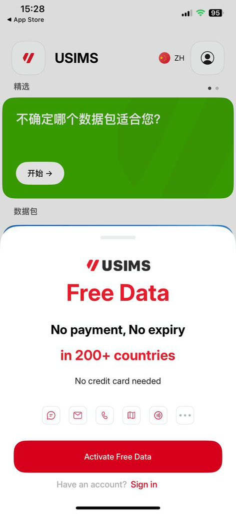
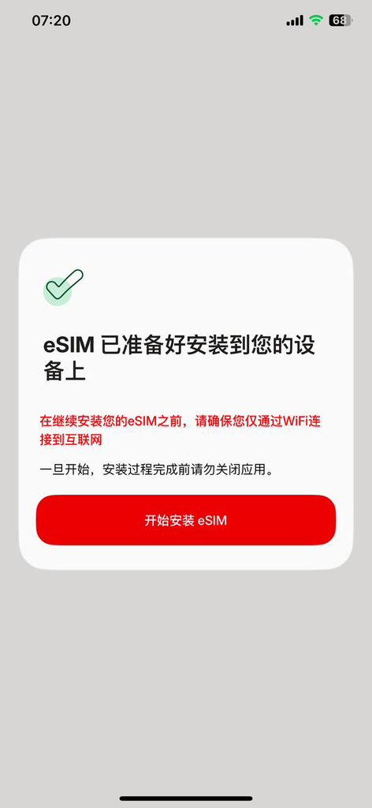
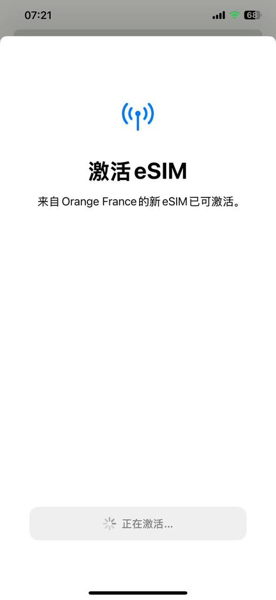

奶昔🥤
@realNyarime
法国Orange版的Firsty吧
200+地区无限量eSIM，需要原生设备（或HookEuicc）
限速128Kbps临时断网了用一下是可以的



奶昔🥤
@realNyarime
法国Orange的firsty吧
200+地区无限量eSIM，需要原生设备（或HookEuicc）
限速256Kbps临时断网了用一下是可以的 https://t.co/2yKml1Kcz3
不惑X nitama.de
@jaylenngx
发一条这两天火热的免费无限法国流量的esim卡！
当然，无限还免费，速度大家就不要抱太大期待！
但尽管如此，我实测下来打开网页刷刷推，注册账号这些还是蛮流畅足够用的！
不过有两个必须的前提条件：
1、注册需要一个国外实体卡性质的号码来接个码！ https://t.co/jCp3e6IbyP